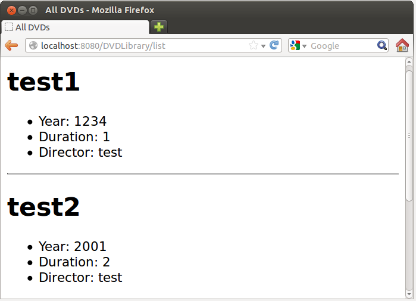

在 Java Tutorial 第三堂（2）使用 spring-jdbc 存取資料庫 中看過，為了能夠使用
DvdDaoJdbcImpl，我們必須建立 DataSource 實例並進行相關設定：
JDBCDataSource dataSource = new JDBCDataSource();
dataSource.setUrl("jdbc:hsqldb:file:src/main/resources/db/dvd_library");
dataSource.setUser("codedata");
dataSource.setPassword("123456");接著
DataSource 實例用來建立 JdbcTemplate 實例：
JdbcTemplate jdbcTemplate = new JdbcTemplate(dataSource);然後
JdbcTemplate 實例用來建立 DvdDao 實例：
DvdDao dvdDao = new DvdDaoJdbcImpl(jdbcTemplate);物件建立與相依注入
物件的建立與相依注入（Dependency Injection）是我們所關心的，只不過當過程太過冗長，模糊了商務流程之時，應該適當地將之分離，也許建立一個工廠方法會比較好：public class DaoHelper {
public static DvdDao createDvdDao() {
JDBCDataSource dataSource = new JDBCDataSource();
dataSource.setUrl("jdbc:hsqldb:file:src/main/resources/db/dvd_library");
dataSource.setUser("codedata");
dataSource.setPassword("123456");
return new DvdDaoJdbcImpl(new JdbcTemplate(dataSource));
}
}那麼要取得
DvdDao 實例，就只要如下撰寫：
DvdDao dvdDao = DaoHelper.createDvdDao();如此之來，程式碼的流程清晰了，而且即使是不懂 JDBC 或
JdbcTemplate 等的開發者，只要透過這樣的方式，也可以直接取得 DvdDao 進行操作。
這個
DaoHelper 當然是特定用途，隨著你打算開始整合各種程式庫或方案，你會遇到各種物件建立與相依設定需求，為此，你可能會重構 DaoHelper ，使之越來越通用，像是可透過組態檔來進行相依設定，甚至成為一個通用於各式物件建立與相依設定的容器（Container），實際上，這類容器，在 Java 的世界中早已存在，且有多樣性的選擇，你可以調查看看有哪些可以使用，避免直接重新打造輪子。
Spring 相依注入
先前的課程中已經使用過 Spring 中的一些方案，實際上，Spring 本身的核心就是一個相依注入容器，而且功能強大，事實上，在 Java Tutorial 第四堂（1）使用 spring-webmvc 框架 中，就已經使用這個功能了，例如，當你在 dispatcher-servlet.xml 中如下設定時：...
<bean class="org.springframework.web.servlet.view.InternalResourceViewResolver"
p:prefix="/"
p:suffix=".jsp"/>
...因為 spring-webmvc 本身就是基於 Spring 相依注入容器而建立起來的，就是在告知 Spring 為你建立
InternalResourceViewResolver 實例並完成相關設定。
Spring 的相依注入容器，英文上也常簡稱為 DI（Dependency Injection）容器 ，實際上，更早前 Spring 採用 IoC（Inversion of Control）容器這個名詞，不過這邊的 IoC 與 Java Tutorial 第四堂（1）使用 spring-webmvc 框架 中談到的 IoC 有所不同，Spring 的 IoC 指的是物件建立與相依設定的控制權，由開發者手中轉換至容器身上，而 Web 框架之類的 IoC，指的是對流程的控制權，從開發者手中轉換至框架身上。
簡單來說，Spring 談到的 IoC 容器比較狹義，為了避免名詞混淆，Spring 建立使用 DI 容器來稱呼其核心容器。
練習 12：使用 Spring 相依注入
這個練習要將練習 10 與練習 11 整合在一起，建立一個簡單的 DVD 管理頁面。在 Lab 檔案的 exercises/exercise12 中有個 DVDLibrary 目錄，已經事先將練習 10 與練習 11 中可重用的程式碼（像是 Dvd.java、DvdDao.java 等）與設定檔（像是 web.xml、dispatcher-servlet.xml 等）準備好。
請開啟 DVDLibrary 目錄中的 build.gradle，在其中的
dependencies 中加上 runtime 'jstl:jstl:1.2'：
dependencies {
runtime 'jstl:jstl:1.2'
...
}這是因為要顯示所有 DVD 清單時，必須得用迴圈之類的語法，不過不建議直接在 JSP 上撰寫 Java 程式碼，JSTL（JavaServer Pages Standard Tag Library）是標準方案，可提供像 HTML 語法的流程標籤，可避免 JSP 頁面中混雜著 Java 程式碼。
接著請開啟 src/main/webapp/WEB-INF 中的 dispatcher-servlet.xml，加入以下設定：
<bean class="org.hsqldb.jdbc.JDBCDataSource"
p:url="jdbc:hsqldb:file:src/main/resources/db/dvd_library"
p:user="codedata"
p:password="123456"/>顯然地，這告訴 Spring 的 DI 容器，要建立
JDBCDataSource 實例，並設定使用者、密碼等相關資訊。
在 src/main/java/tw/codedata 目錄中建立 DvdController.java，內容撰寫如下：
package tw.codedata;
import org.springframework.beans.factory.annotation.Autowired;
import org.springframework.stereotype.Controller;
import org.springframework.ui.Model;
import org.springframework.web.bind.annotation.*;
@Controller
public class DvdController {
private DvdDao DvdDao;
@Autowired
public void setDvdDao(DvdDao DvdDao) {
this.DvdDao = DvdDao;
}
public DvdDao getDvdDao() {
return DvdDao;
}
@RequestMapping("list")
public String list(Model m) {
m.addAttribute("dvds", getDvdDao().allDvds());
return "list";
}
@RequestMapping("add")
public String add(
@RequestParam("title") String title,
@RequestParam("year") Integer year,
@RequestParam("duration") Integer duration,
@RequestParam("director") String director,
Model m) {
Dvd dvd = new Dvd(title, year, duration, director);
getDvdDao().saveDvd(dvd);
m.addAttribute("dvd", dvd);
return "success";
}
}注意到
setDvdDao 方法上有個 @Autowired 標註，這告訴 Spring，自動從 DI 容器中找到個型態相符之實例，並透過該方法注入給 DvdController，而根據 @RequestMapping 設定，請求 "/list" 時會由 list 方法處理，而請求 "/add" 時，會由 add 方法處理，兩個方法分別傳回 "list" 與 "success"，根據 dispatcher-servlet.xml 的設定，這會分別由 list.jsp 與 success.jsp 處理。
請在 src/main/webapp 目錄中，建立一個 success.jsp：
<%@page contentType="text/html" pageEncoding="UTF-8"%>
<!DOCTYPE html>
<html>
<head>
<meta http-equiv="Content-Type" content="text/html; charset=UTF-8">
<title>Success</title>
</head>
<body>
You add a DVD.
<ul>
<li>Title: ${dvd.title}</li>
<li>Year: ${dvd.year}</li>
<li>Duration: ${dvd.duration}</li>
<li>Director: ${dvd.director}</li>
</ul>
</body>
</html>這個很簡單，再來建立一個 list.jsp：
<%@page contentType="text/html" pageEncoding="UTF-8"%>
<%@taglib prefix="c" uri="http://java.sun.com/jsp/jstl/core"%>
<!DOCTYPE html>
<html>
<head>
<meta http-equiv="Content-Type" content="text/html; charset=UTF-8">
<title>All DVDs</title>
</head>
<body>
<c:forEach var="dvd" items="${dvds}">
<h1>${dvd.title}</h1>
<ul>
<li>Year: ${dvd.year}</li>
<li>Duration: ${dvd.duration}</li>
<li>Director: ${dvd.director}</li>
</ul>
<hr>
</c:forEach>
</body>
</html>
@taglibc，uri 代表著 JSTL 獨一無二的識別，因此之後就可以使用 <c:forEach> 來顯示 DVD 清單。
DVDLibrary 中還為你建立了 index.jsp、add.jsp，分別是首頁與表單。執行 gradle tomcatRunWar 後，使用瀏覽器連接 http://localhost:8080/DVDLibrary/，就可以進行操作。以下是顯示 DVD 清單的一個頁面示範：
{kind=link}
